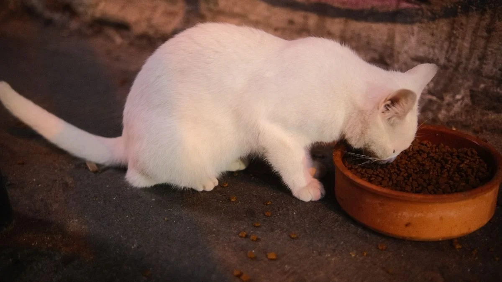
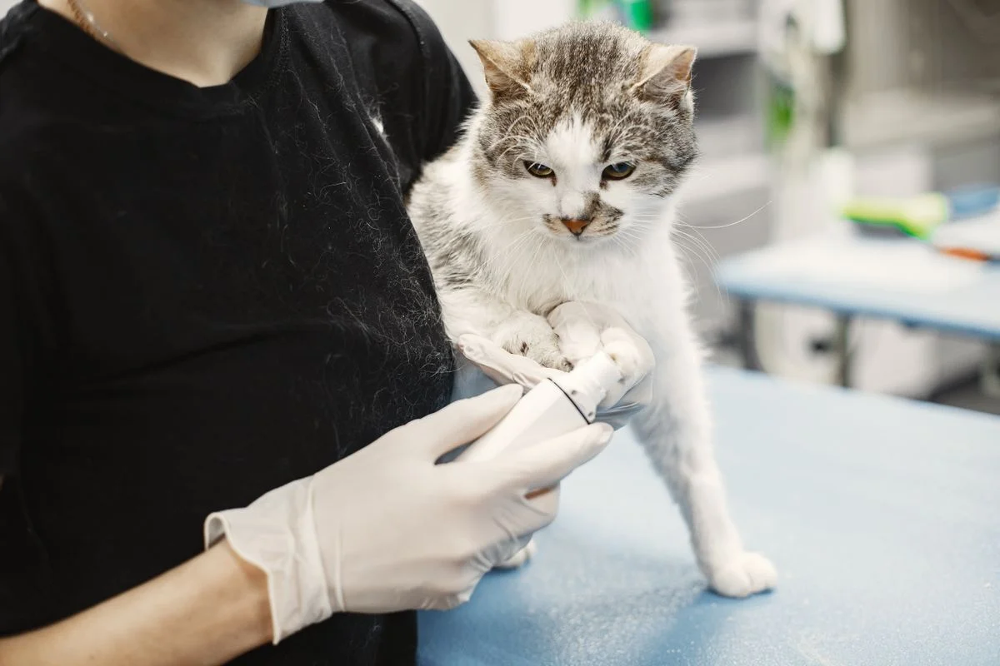
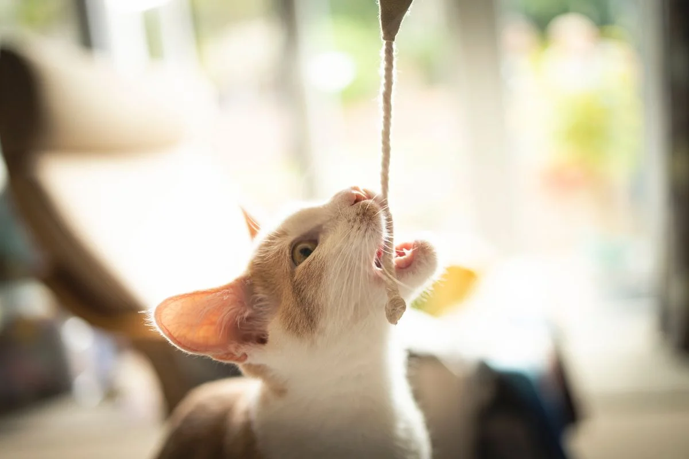

Este post contém links de afiliado. Podemos receber uma comissão em compras feitas através deles, sem custo adicional para você.
Gato acima do peso é um problema comum, e a primeira pergunta de quem já tentou controlar porções "no olho" é se um comedouro automático resolve isso de vez. A resposta curta é: ajuda bastante, mas não sozinho. O equipamento controla quantidade e horário — o resto do plano continua dependendo de decisões que só um veterinário pode tomar com segurança.
Key Takeaways
- O comedouro automático controla porção e horário, reduzindo o "beliscar" fora de hora, mas não define sozinho quantas calorias o gato deve comer por dia.
- A porção ideal precisa ser calculada por um veterinário com base no peso atual, peso alvo e na caloria por grama da ração escolhida.
- Modelos que liberam a porção em frações ao longo do dia ajudam gatos que comem rápido demais, o que também pode reduzir episódios de vômito após a refeição.
- Comedouro automático é ferramenta de apoio à disciplina alimentar, nunca substituto do acompanhamento veterinário no tratamento de obesidade felina.
Antes de continuar, vale revisar o guia completo de comedouro automático para pet para entender os tipos de equipamento disponíveis e como cada um se encaixa na rotina alimentar.
Sobrepeso e obesidade estão entre os problemas nutricionais mais frequentes identificados por veterinários em consultas de rotina, tanto em cães quanto em gatos. Um retrato dessa realidade vem de um estudo da FMVZ-USP conduzido com 258 cães e 221 tutores na cidade de São Paulo, que encontrou 14,6% dos animais obesos e 40,5% com sobrepeso ou obesidade combinados (Porsani, FMVZ-USP, 2019). Embora a amostra do estudo seja de cães, o padrão de excesso de peso é amplamente reconhecido também na população felina atendida em clínicas veterinárias.
No caso específico dos gatos, o quadro é ainda mais expressivo: segundo a médica-veterinária Letícia Tortola, especialista em nutrição de cães e gatos, em entrevista ao Hospital Veterinário da FMVZ-USP, mais de 50% dos gatos estão acima do peso ou obesos, e a prevalência de obesidade na espécie felina tende a ser ainda maior do que na canina (Hospital Veterinário FMVZ-USP, retrieved 2026-08-21). Esse retrato reforça um ponto central: o controle de porção é uma das ferramentas mais citadas por veterinários para prevenir e apoiar o tratamento do sobrepeso em pets, independente da espécie.
Isso não significa que todo gato gordo virou assim só por comer demais de uma vez — sedentarismo, castração, idade e até a formulação da ração influenciam o ganho de peso. Mas a quantidade de comida ingerida por dia continua sendo a variável mais fácil de controlar em casa, e é exatamente aí que o comedouro automático entra.
| Controla | Não controla |
|---|---|
| Quantidade de ração liberada por refeição (gramas ou porções) | Se a ração escolhida é adequada para o objetivo de peso |
| Frequência das refeições ao longo do dia | Ajuste automático da porção conforme o gato emagrece ou engorda |
| Regularidade dos horários (elimina a variação humana) | Avaliação de condição corporal — isso é papel do veterinário |
| Liberação fracionada em alguns modelos (reduz velocidade de ingestão) | Se a porção programada está correta para aquele animal específico |
A maioria dos comedouros automáticos permite programar a quantidade de ração liberada em gramas ou em "porções" equivalentes a uma medida padrão. Isso elimina a variação humana — servir "um pouco mais" porque o gato miou insistente, por exemplo — que é uma das causas mais comuns de excesso calórico em gatos com livre acesso à comida.
Programar refeições menores e mais frequentes ao longo do dia, em vez de uma ou duas porções grandes, pode reduzir a sensação de fome entre as refeições e diminuir o comportamento de "implorar" por comida, que costuma levar a petiscos extras fora do plano alimentar.
O equipamento não sabe se a ração escolhida é adequada para controle de peso, não ajusta automaticamente a porção conforme o gato emagrece e não substitui a avaliação de condição corporal feita pelo veterinário. Programar uma porção errada — mesmo que consistente — só vai manter o excesso de peso de forma mais organizada.
O caminho recomendado é: consulta veterinária para avaliar peso atual, peso alvo e condição corporal; escolha de uma ração adequada ao objetivo, que já vem com a caloria por grama informada na embalagem; cálculo da quantidade diária em gramas com base nesses dois dados; e só então a programação dessa quantidade, dividida em 2 a 4 refeições, no comedouro automático. Reprogramar a porção a cada retorno veterinário, conforme o peso evolui, é o que garante que o equipamento continue fazendo sentido ao longo do tratamento.
Vale lembrar que as necessidades calóricas de gatos e cães não são as mesmas, o que também influencia a granularidade da porção programada — o tema é detalhado no comparativo entre comedouro automático para gato x cachorro.

Alguns modelos de comedouro automático oferecem a opção de dividir uma única porção programada em pequenas frações liberadas em intervalos curtos, em vez de derramar tudo de uma vez no pote. Essa função é útil para gatos que comem rápido demais — um comportamento associado tanto a vômito pós-refeição quanto a maior ingestão calórica em curto espaço de tempo, já que o cérebro leva alguns minutos para registrar saciedade. Não é uma solução mágica, mas reduz a velocidade com que a porção desaparece, dando tempo para o gato perceber que já comeu.
Um comedouro mal configurado pode piorar o quadro em vez de ajudar. Erros comuns incluem programar porções baseadas em "achismo" em vez de cálculo veterinário, não ajustar a quantidade conforme o gato emagrece ou engorda, e usar o modo de acesso livre (sem horários fixos) em vez do modo programado para animais que já têm histórico de sobrepeso. Vale a leitura sobre os riscos e cuidados ao usar um comedouro automático antes de configurar o equipamento para um pet em processo de emagrecimento.
Além da balança (que deve ser usada periodicamente, conforme orientação veterinária), vale observar a facilidade de sentir as costelas do gato ao passar a mão sobre o tórax, a presença ou ausência de uma "barriguinha" pendular visível de lado, e o nível geral de disposição do animal. Mudanças devem ser graduais — emagrecimento rápido demais em gatos pode ser perigoso e está associado a uma condição hepática grave, por isso o acompanhamento veterinário durante todo o processo não é opcional.

O comedouro automático é uma ferramenta de apoio real no controle de peso de gatos, principalmente por eliminar a variação humana na hora de servir a ração e por permitir refeições fracionadas ao longo do dia. Mas ele só funciona dentro de um plano definido por um veterinário — a porção certa, a ração certa e o acompanhamento da evolução do peso continuam sendo decisões profissionais que o equipamento não substitui.
guia completo de comedouro automático para pet · comedouro automático para gato x cachorro: as diferenças
Escrito por Nildo Alves. Veja nossa política editorial e como verificamos as fontes citadas neste artigo.
🐾 Confira o preço e a disponibilidade atual no Mercado Livre.
Ver no Mercado Livre →Link de afiliado: podemos receber uma comissão por compras feitas através deste link, sem custo adicional para você.
Não. O comedouro controla a quantidade e o horário da ração, o que ajuda a evitar excessos, mas o emagrecimento depende de um plano alimentar definido por um veterinário, que considera calorias, tipo de ração e nível de atividade do gato.
Não existe um valor universal. A porção deve ser definida pelo veterinário com base no peso atual, peso alvo e na caloria por grama da ração usada, e depois ajustada no aplicativo ou no dosador do comedouro conforme a evolução do gato.
Não. O equipamento controla a quantidade e a frequência das refeições, mas a composição nutricional da ração (calorias, fibras, proteína) continua sendo definida pela escolha do produto, geralmente orientada por um médico-veterinário.
Sim, alguns modelos liberam a porção em pequenas frações ao longo do dia em vez de uma vez só, o que reduz a velocidade de ingestão e pode ajudar tanto no controle de peso quanto em problemas digestivos associados à compulsão alimentar.
Nildo Alves — curadoria de produtos pet no Smart Pet Gadgets. Testa e pesquisa produtos para cães e gatos, cruzando especificações de fabricante com boas práticas veterinárias e dados de mercado.
Sobre o Smart Pet Gadgets · Contato · Política editorial e de afiliados